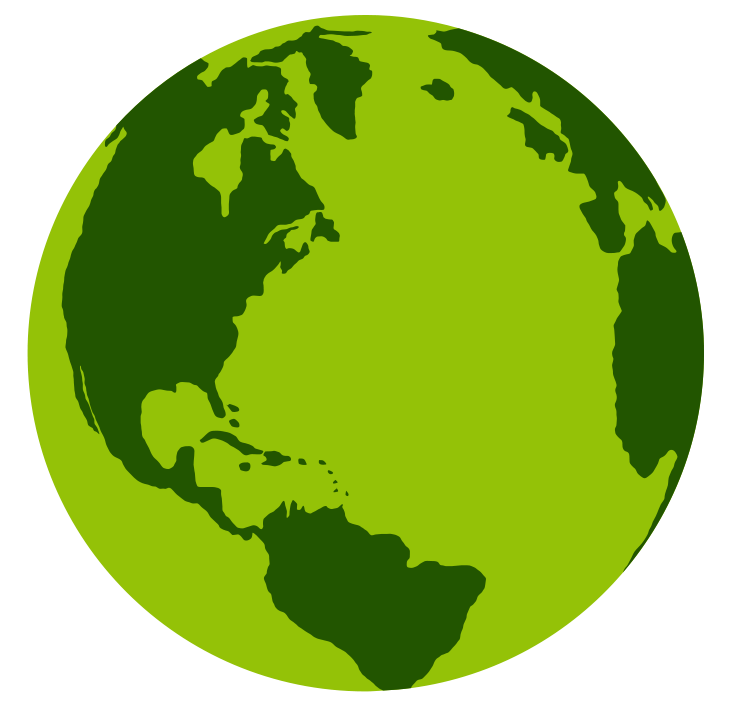
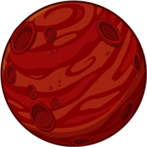

Green Planet

Red Plant

Yellow Sun

This is the score board for high scores
| Place | UserName | Score |
|---|---|---|
| 1 | Jaysson29 | 17 |
| 2 | Jaysson29 | 15 |
| 3 | Jaysson29 | 10 |
| 4 | Jaysson29 | 8 |
| 5 | Jaysson29 | 6 |
This has not been intergrated to the game yet but will be soon...
This is a simple JavaScript Simon Game.
The Tech I Used :
Html 5 CSS 3 JavaScipt
About Simon Game :
Simon is an electronic game of memory skill invented by Ralph H. Baer and Howard J. Morrison, working for toy design firm Marvin Glass and Associates, with software programming by Lenny Cope. The device creates a series of tones and lights and requires a user to repeat the sequence ( Find Out More Here ! ). I Have Created A JavaScipt Version Which Uses The Same Algorithm. I Used Colored Planets Instead Of Just Color To Make It Unique.
Try And Get The Highest Score, If Your Dare
Have Fun And Good Luck